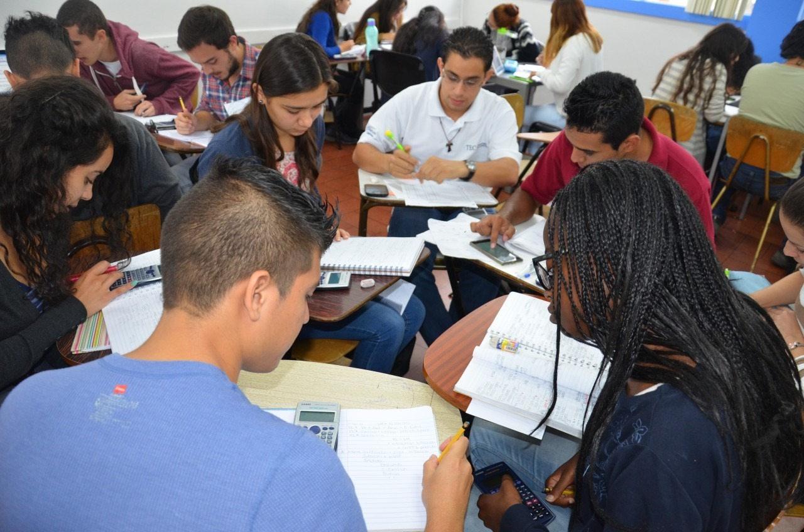

ITEC FE Y ALEGRIA
HISTORIA
DOCENTES
ESTUDIANTES
CARRERAS
Los estudiantes de un instituto representan la promesa de un futuro mejor, ya que en su etapa de formación no solo adquieren conocimientos teóricos y prácticos, sino que también desarrollan habilidades esenciales para la vida, como el pensamiento crítico, la creatividad, la empatía y la resiliencia. En las aulas, forjan amistades, exploran sus intereses y descubren sus pasiones, mientras los docentes y el entorno educativo les brindan las herramientas necesarias para enfrentar los retos de un mundo cambiante y competitivo. Cada día, su curiosidad y su esfuerzo reflejan el deseo de superarse, de construir un camino hacia sus metas y de contribuir positivamente a la sociedad. Además, su diversidad en pensamientos, ideas y perspectivas enriquece el ambiente académico, fomentando un intercambio cultural y social que fortalece la convivencia y el respeto mutuo. A través de los proyectos, actividades extracurriculares y experiencias compartidas, los estudiantes no solo se preparan para su futura vida profesional, sino que también se convierten en individuos conscientes de la importancia de la responsabilidad, la ética y el impacto de sus acciones en su comunidad y en el mundo.
